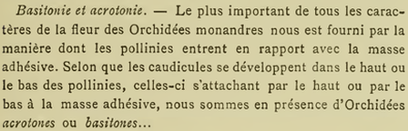
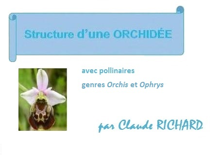
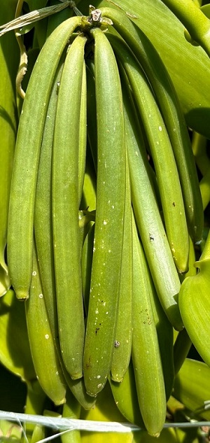

Orchidées terrestres
Orchidées terrestres
Généralités
De l'ordre des Asparagales les orchidées forment la grande famille des Orchidaceae.
Ce sont des plantes monocotilédones aux fleurs complexes, généralement épiphytes sous les tropiques où elles sont parfois des lianes, comme l'est la vanille.
En France, elles sont terrestres et peuvent être
chlorophylliennes ou ± non chlorophylliennes
Les orchidées sont remarquables par les interactions écologiques qu'elles ont avec leurs pollinisateurs qu'elles duperaient souvent par une interaction qui leur bénéficierait alors que les insectes n’obtiendraient pas la ressource qu'ils recherchaient ("pollinisation par duperie" selon les néodarwiniens qui semblent ignorer que Darwin a étudié les orchidées, notamment dans son ouvrage initulé De la fécondation des orchidées par les insectes.
D'abord attirés par la diffusion aérienne de parfums, puis par la vue lorsqu'ils s'approchent de leur inflorescence cible, ces pollinisateurs percevraient enfin des signaux tactiles et des composés difficilement volatils et extractibles lorsqu'ils se posent sur l'orchidée de leur choix.
Elles ont également des interactions avec les champignons qui forment avec elles des micorrhizes, notament lorsqu'elles sont mixotrophes. En 2024, une biologie dite "de l'involution" permet de voir les choses autrement que de coutume : l’évolution n’est pas linéaire, elle n’est pas orientée vers une seule direction, mais elle est au contraire soumise à des croisements, à de la coopération entre les espèces.
Les Orchidées terrestres ont des racines (rhizomes ou tubercules) leur permettant de résister aux aléas climatiques... mais pas à l'altération de leurs milieux.
D'où l'importance de ne surtout pas les déraciner, d'autant plus qu'elles tissent des liens avec le mycelium de champignons dès le stade de la germination de leur graines minuscules qui ont la particularité d'être sans albumen et qui deviennent des protocormes.
De toutes façons, leurs transplantations sont vouées à moyen terme à l'échec.
D'autre part, dans l'Yonne, les Orchidacées sont toutes monandres.
Avec ses deux étamines, le Sabot de Vénus (Cypripedium calceolus) qui n'a par contre pas de rostellum, est une exception. On le trouve en Bourgogne mais pas dans l'Yonne.

Le Livre des Orchidacées (page 169)
par le Comte O. de Kerchove de Denterghem,
Gand / Paris, 1894
Peu avant et pendant leur épanouissement, les fleurs des Orchidacées ont la particularité de se mouvoir d'une façon particulière nommée résupination, modifiant entre autre la position de leur labelle (un sépale dorsal transformé) qui peut alors être le plus souvent hypogyre (en position basse) ou parfois épigyre (en position haute).
Il est à noter que chez les Orchidacées le mot stigmate semble être remplacé par l'expression cavité stigmatique se présentant sous la forme d'un orifice dans la partie supérieure de la colonne. Cette cavité abrite la zone (dite surface stigmatique fertile) où sera collé le pollen lors de la fécondation.
Une excroissance, plus ou moins développée selon les espèces d'Orchidacées (nommée rostellum) située entre la surface stigmatique fertile et les pollinies, empêche l’autofécondation. Le sommet du rostellum peut comporter une glande (glande rostellaire) dite viscarium sécrétant une substance visqueuse collant les pollinies sur le corps de l’insecte pollinisateur, évitant ainsi l'autopollination d'une fleur, mais pas celle de l'inflorescence.

Cliquer pour voir le diaporama
Les fruits des orchidées en général sont des capsules à 3 à 6 fentes, la vanille, qui est une orchidée lianescente, étant une exception car ses "gousses" sont des capsules à 3 loges s’ouvrant par deux fentes de déhiscence longitudinale.

Gousses de Vanilla planifolia B.D.Jacks. ex Andrews, 1808
Sainte Suzanne, La Réunion, juin 2024 - Photo © Elia
- Les orchidées européennes avec les photos de Pascal Decologne.
- Vanilla planifolia B.D.Jacks. ex Andrews, 1808 : une liane.
 |